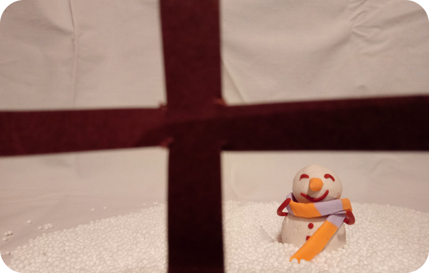

Aquesta va ser l’activitat individual de l’última setmana d’aquesta assignatura. El projecte consistia a realitzar un curtmetratge de temàtica i condicions lliures. Com que era l’època de Nadal, la idea que vaig tenir va ser fer un curtmetratge relacionat amb la temporada, i el que vaig fer finalment va ser una stop-motion feta amb figures de ninots de neu de plastilina. Aquest en va ser el resultat. Per veure el vídeo, cliqueu damunt la imatge i se us obrirà una pestanya on visualitzar-lo.
